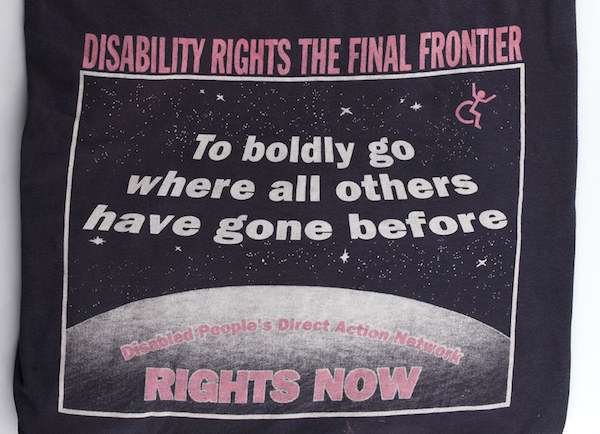

Présomption de la capacité: le droit des personnes avec altération mentale dans la législation britannique
14 Avril 2019Za zaborom: l'handicap mental et système institutionel en Russie
12 Juin 2019Trois approches du handicap: vade-mecum
29 Novembre 2019
Présomption de la capacité:
le droit des personnes avec altération mentale dans la législation britannique

source: https://www.scie.org.uk/mca/introduction/mental-capacity-act-2005-at-a-glance
La loi sur la capacité mentale (Mental Capacity Act), votée en 2005, s’applique depuis 2007 en Angleterre et Pays de Galles
(l’Ecosse et l’Irlande du Nord ayant leurs propres législations).
Loin de vagues et grandiloquentes affirmations, cette loi trace, avec beaucoup de précision, le cadre du respect de l’avis de
la personne adulte ayant une altération de ses facultés mentales.
Elle vise tant les personnes qui sont arrivées à l’âge adulte avec cette altération, que toute personne désirant anticiper
la perte de ses capacités mentales.
Tous les professionnels et aisants familiaux ont l’obligation de respecter le cadre de cette loi et appliquer les pratiques
désignées. Le rôle des “experts” dans la définition du niveau des capacités mentales est diminué au profit des intervenants de
tous les jours, qui sont désormais formés à pouvoir évaluer le niveau de la capacité, mais également les désirs et choix des
personnes exprimées par les moyens qui sont les leurs.
Condamnation à vie en France
En France, c’est exactement le contraire qui se passe actuellement, contre tout bon sens. L’expert auprès des tribunaux voit la personne une seule fois, rarement plus que 10 minutes. Il ne tient compte ni de la spécificité de cette personne qu’il (l’expert) ne peut qu’ignorer, ni l’état de stress éventuel, ni, d’une manière générale, du facteur du contexte. Il n’a absolument pas le temps d’observer, d’établir la relation, d’essayer de comprendre. Cet expert, s’il « ausculte » la personne relevant d’une mesure de la tutelle, rend un certificat qui invalide toute la capacité future de la personne à faire un quelconque choix ou prendre une décision pour elle-même, le plus souvent, à vie.
Cinq principes du Mental capacity Act
1. Présomption de la capacité: aucune personne, même sévèrement atteinte, ne peut être déclarée d’emblée comme incapable de
donner ou refuser son consentement. A chaque décision, comme, par exemple, l’administration d’un médicament, même si la
personne est profondément atteinte, les proches et/ou professionnels vont d’abord rechercher l’avis et consentement et
guetter le moindre signe (parole, son, geste). Il est interdit de déclarer la personne non capable d’expression de consentement
pour cause de maladie ou handicap.
En France, l’incapacité d’expression du consentement est donné quasiment à vie, surtout dans le cadre du régime de
tutelle. Tout est décidé par le tuteur la personne n'ayant aucune emprise sur les choix, des plus importants au plus banals.
2. Les personnes sont assistées dans leur décision. Cela signifie que tout effort possible doit être fait pour que la personne
puisse prendre sa propre décision. Si même l’incapacité de le faire est établie, la personne sera impliquée aussi loin que
possible dans la décision.”
En France, ce type d’assistance à la décision n’existe pas. Ou alors, récemment, il a commencé à exister dans les paroles
(telles celles de la Secrétaire d’Etat pour les Personnes Handicapées, Mme Cluzel) non suivies d’effet.
3. « Les décisions “irréfléchies” (unwise decisions) sont prises en compte. Le “bon sens” n’est pas une valeur universelle.
Là, c’est le coeur de la différence entre la mentalité française et, disons, non-française. En France, le terreur de la norme
sévit dans tous les domaines, malgré les lois et bonnes volontés affichées. En ce sens, la France se rapproche beaucoup plus
des pays de l’Europe de l’Est (avec leur passé totalitaire) avec cette spécificité d’existence d’un étalon et son émanation -
des “niveaux”. Même dans le handicap, on va essayer d’imposer des niveaux : on croise toujours les définition d’autisme de
“haut” et “bas” niveau. Le mépris pour un avis (décision) “irréfléchi” est alors la règle.
4. Tout ce qui est fait doit l’être dans l’intérêt supérieur (best interest) de la personne. Il s’agit là d’une exigence
morale qui est évidente.
Seulement là encore, la différence de conception même de l’existence individuelle (versus société) est à la base de
l’interprétation très différente de cette maxime. En France, l’intérêt d’une personne est d’atteindre, le plus possible,
une existence “normée”. La valeur d’une vie est mesurée par la réussite relative dans cette voie. Pour ceux qui seront
jugés d’emblée incapables de cette “dynamique”, leur meilleur intérêt serait de ne pas gêner l’existence de “ceux qui peuvent”.
C’est très visible dès l’école : parce que l’école est l’endroit, où jusqu’à un certain point et un certain âge, tout
le monde a a priori accès (même si, pour certains, cette participation à l’expérience éducative commune ne dure que
quelques jours ou semaines, avant la relégation dans les poches isolées de la société). L’école , dès le départ est considérée
comme un terrain de compétition : ceux qui ne peuvent pas y prendre part ne doivent pas gêner les autres (on ne connaît que
trop bien les plaintes des enseignants et des autres parents (jamais des autres enfants - eux ne sont formatés définitivement
à la compétition que bien plus tard) stigmatisant les enfants handicapés qui “freinent les progrès des autres”, ou pire, “font peur” aux autres.
Il y aurait donc une sorte de transfert de l’intérêt individuel de chaque personne vers ceux qui “méritent” plus cet intérêt:
on va décider de placer une personne handicapée dans une institution pour qu’elle gêne le moins possible l’existence des gens
“normaux” et, cyniquement, on va parler de “son intérêt”, sa protection. En réalité, c’est le prétendu intérêt et la protection
de ceux qui restent “dehors” dont il s’agit.
5. Le Principe du choix, pour la personne qui accompagne (s’occupe de) la personne handicapée : agir de sorte à interférer
le moins possible avec les droits de la personne dépendante ou s’abstenir de toute action. Chercher les option les plus
restrictives possibles, minimiser l’intervention. C’est du respect de la vie humaine comme la chose la plus précieuse
qu’il s’agit, et cela, encore, est enraciné dans la vision de chaque individu devant avoir le même “crédit” d’existence.
Je me rappelle très bien cette phrase de M. Baglan, alors Inspecteur (Directeur) Académique de Lyon, justifiant
l’exclusion musclée et brutale de mon fils de son collège: “L’intérêt de l’Etat est au-dessus de celui de votre fils,
Madame”.
En effet, la vie humaine est vue souvent en France comme faisant partie d’une pyramide hiérarchique : plus haut on se trouve,
plus de liberté et de force de décision on possède. La dépendance est inversement liée au degré du pouvoir de décision :
ce semble être très logique pour un esprit français. L’autonomie n’est une valeur que si tu peux la défendre toi-même.
Le pouvoir de défendre son autonomie est, en soi, l’autonomie. Finalement, quand on y pense, le rapport dans la société en
France, en prenant l’exemple de la situation des personnes dépendantes, n’est pas loin de celui d’une jungle sauvage… et encore...
il existe des solidarités animales.
La "particularité française", encore et toujours
Pour revenir vers le Mental Health Act : beaucoup d'autres pays prennent actuellement la même direction en ce qui concerne
la vie de personnes dépendantes. L'Irlande a adopté un Act très similaire et le suit rigoureusement. Les pays Scandinaves ont
adopté la paradigme de la « normalisation » (compris comme désinstitutionnalisation et inclusion dans la société) depuis les
années 1990. Les pays comme l’Autriche ou la Géorgie ont banni le régime de tutelle et promeuvent la décision assistée.
En France, aujourd'hui, seules des paroles en ce sens – très rares - apparaissent à la surface de la « com ». Et elles risquent,
vu le rapport des forces dans la socité française aujourd'hui, d'y rester. Pour les actes, on nous conseille d’attendre....
haut de page
Za zaborom: handicap mental et le système institutionel en Russie

Internat neuro-psychiatrique N20 à Moscou
Cet article, sans aucune prétention d'exhaustivité, est une compilation des nombreuses sources russes, parmi lesquelles les
publications des quotideiens Meduza et Kommersant:
https://meduza.io/feature/2017/07/25/nu-vyzdoravlivayte
https://www.kommersant.ru/doc/2589702
Si quelqu’un veut chercher des point communs entre la France et la Russie, il lui suffit de bien observer : en Russie,
comme en France, les handicapés mentaux sont invisibles. On ne les croise pas dans la rue ni - surtout - dans les transports
publics. Si, en France, parfois, on les croise, ils sont en groupes entourés de leur éducateurs, une matinée en semaine sur
un marché vide, ou dans un concert gratuit le vendredi midi à l’opéra. En Russie, seules quelques rares initiatives, dont
d’ailleurs le nom est éloquent, comme celui de “Выход”
(sortie) à Saint Pétersbourg, permettent à des personnes avec un
handicap cognitif (mental) de vivre parmi les "normaux".
Parlons de tous les autres
En Russie aujourd’hui, comme dans l’ancienne URSS, le handicap reste une honte. Même le handicap physique, même celui des mutilés de
guerre. Les regards se détournent toujours et l’accès dans des lieux publiques, déjà difficile pour les handicapés physiques,
est souvent interdit aux handicapés mentaux. Dans la presse et les réseaux sociaux, les témoignages des proches à qui on a
demandé de quitter un café ou un aire des jeux avec leur enfant handicapé mental, fusent.
Ceux qui étaient nés handicapés, en URSS, restaient tout simplement invisibles. Cela continue de nos jours. La plupart ne quittent
pas la maternité avec leur mère : un enfant dont le handicap est évident à la naissance, est le plus souvent abandonné par sa
mère qui signe, sur le conseil des médecins et la pression de la société, les «papiers», en abdiquant ses droits parentaux.
L’enfant reste à la charge entière de l’Etat et passe toute sa vie dans les institutions, la responsabilité et la tutelle
étant souvent confiée aux établissements eux-mêmes. Le handicap sensoriel était toujours mieux toléré - les malvoyants et
sourd-muets, même formant des communautés à part et souvent écartés de l’éducation supérieure faute des aménagent nécessaires,
vivaient cependant parmi les autres et bénéficiaient des mêmes droits et privilèges basiques. Mais tout ce qui déformait le
corps et sortait des limites - très serrées - du comportement admissible, était banni du regard, à jamais. Associé à un
système d’Etat omniprésent (une sorte d’état-providence à la providence très sinistre), cette mentalité, développée durant la
période soviétique (la Russie pré-révolutionnaire était plus marquée par une acceptation des “fous des Dieu” comme on les
appelait) a créé une paradigme institutionnel très coriace.
Les institutions sont traditionnellement toutes de grande taille : rarement moins de cent personnes. Le régime y est de facto
carcéral et le dénuement matériel patent. Les personnes en fauteuil roulant ou alitées ne sortent dehors durant des années:
les assesseurs sont souvent en panne ou absents. Le manque du personnel fait que il n’y est jamais question des activités
quelconques alors que la nourriture et les soins hygiéniques ne sont pas assurés correctement. Quant aux personnes avec
troubles du comportement, elles sont rarement présentes dans ces institutions : elles finissent leur vie - souvent très
courte - dans des hôpitaux psychiatriques. Il y a aussi beaucoup d’orphelins et d’enfants placés qui se perdent dans les
profondeurs du système institutionnel, même s’ils ne sont pas à proprement parler des handicapés.
Depuis toujours la surmédicalisation était de mise, en psychiatrie, tout comme dans les internats (c’est comme cela qu’on
appelle, en ex-URSS, les MAS et autres FAM) . Du temps soviétique, on s’en servait comme d’un outil de répression : nombre
de dissidents en ont fait l’expérience. Aujourd’hui, l’approche par «camisole chimique» règne sans partage dans ces
établissements. L’argent d’Etat y est géré «en interne», ce qui ouvre une large voie aux détournements de fonds : dans le pays
très corrompu qu’était URSS - et que sont restés aujourd’hui ses différents «morceaux» - l’invisibilité et la faible
conformité aux règles des établissements pour personnes handicapés forment toujours un terreau très fertile pour toute sorte
d’abus et pas uniquement financiers.
Osons la comparaison
Le système et la législation sur la tutelle en Russie sont similaires à ce qu’on connaît en France : à l’âge de 18 ans,
un tuteur est désigné pour ceux qui ne sont pas «aptes à travailler», avec attribution d’un degré d’invalidité selon trois
niveaux différents. Ce classement est difficilement réversible, en tous cas, dans le sens de l’amélioration. L’attribution
de l’inaptitude à travailler se fait à la chaîne, sans entrer dans les détails, par dizaines de «cas» en une seule audience.
Si la famille peut héberger la personne, la question de son internement ne se pose généralement pas. En revanche, en l’absence
(décès) des proches, la seule solution reste ce genre d’«internat». Il en va de même pour les personnes âgées dépendantes :
la solidarité familiale domine - même si celle-ci crée parfois des situations de maltraitance : il reste «honteux» d’envoyer
ses parents dans une «maison de vieux». C’est même impossible car l’admission serait refusée tant qu’il y a des enfants
vivant quelque part.
C’est seulement dans les dernières années que l’idée de vie autonome pour les personnes handicapées mentales - et en dehors
de l’institution - a commencé à se frayer un chemin. Ces initiatives (comme celle, à Sankt-Petresbourg, mentionnée plus haut)
se basent le plus souvent sur le mécénat privé. Certaines sont financées par l’Eglise Orthodoxe Russe.
Tout comme la France, la Russie présente un grand écart entre la loi et la pratique. Elle a, comme presque la totalité des pays
du monde, ratifié la CIDPH. La Constitution Russe est assez explicite dans le sens de la protection des droits et libertés
dans le domaine du handicap : par exemple, la médication non-consentie, tout comme la privation de la liberté d’aller et
venir sont prohibées en dehors de l’hospitalisation sans consentement. Pourtant, dans la pratique, et même dans les règlements
intérieurs des institutions, la privation de la liberté et la médication forcée sont la réalité dominante.
Mais à la différence de la France - et à la surprise des personnes connaissant la situation générale concernant les libertés
en Russie - les informations sur les conditions de vie dans les institutions paraissent régulièrement dans la presse. Les
différents mouvements volontaristes et organisations caritatives arrivent à rentrer dans ces internats, et même à y provoquer
certains changements. Cela tranche avec le désintérêt presque total de la société civile française à l’égard de ce qui se
passe derrière les murs des Maisons d'accueil spécialisée et différents « foyers ». Peut-être parce que la réalité y
diffère beaucoup de l’image que la conscience de nos concitoyens s’en fait et accepte, comme alibi de son désintérêt.
En Octobre 2014, la journaliste Allenova du très populaire journal «Kommersant» publie un article sur la série des suicides
dans un internat N°30 de Zvenigorod, non loin de Moscou. Le titre en est une citation tirée des interviews «Le territoire
hors des loi». Les témoignages poignants des «survivants» parlent de la privation de la liberté, de l’isolement comme mesure
disciplinaire, des violences et des viols : le tout dans l’impunité totale. Suite à cette publication, il y a eu une
intervention des autorités, et certains changements ont été engagés non seulement dans cette institution, mais aussi à l
’échelle de l’Etat : après une inspection dans cet internat de Zvenigorod en Février 2016, le ministre du travail, Maxime
Topiline, a annoncé qu’il était «nécessaire de réformer ces établissements». Suite à quoi il a été formé deux groupes du
travail : l’un fédéral et l’autre, basé à Moscou, dont le but a été de développer un projet pilote qui fonderait une
alternative au système institutionnel. Les «volontaires» à l’origine des signalements ont été invités à collaborer dans ces
groupes. Cependant, l’absence d’une étude approfondie de la situation, la limitation en moyens et l’absence d’un fort
leadership ont fait que la réforme stagne. Les changements de surface arrivent après la grogne des volontaires, mais le
système demeure.
Sans visage
La situation est résumée par la même journaliste (Allenova): «L’alternative aux internats n’existe pas». En effet, à part
des initiatives dans des grande villes, qui donnent la chance d’une vie inclusive à quelques personnes, le changement de
paradigme n’est ni pensé ni même souhaité par la majorité de la population et les autorités. L’implosion de la vie
communautaire, jadis base de la société russe, contribue à la perpétuation de la situation.
Une jeune artiste Russe, Katherine Nenasheva, participait, durant l’été 2016, à un projet avec des résidents de l’internat
N°18 (vous l’avez compris, les institutions portent juste des numéros en Russie, ce qui a l’avantage de correspondre à la
situation réelle - et cruelle). Après la publication de ses photos avec les résidents, elle a reçu l’injonction de les
supprimer d'internet : seuls les tuteurs pourraient autoriser leur publication. «Donc, ces gens ne possèdent rien - même
pas de visage», a réagi l’artiste. Faut-il ajouter que, à part de ces rares – et régulièrement étouffées - initiatives de
rendre handicap visible, il reste en déhors du champ visuel des citoyens 'ordinaires'.
Cet état des choses, nous le connaissons que trop bien.
haut de page
Trois approches du handicap: vade-mecum
Modele médical: objets de soin
Les marqueurs de ce modèle:
- perception du handicap à travers la déficience (incapacité);
- primauté du souci du diagnostic;
- exigence d’une compensation du handicap (ce qui le fait considérer, en termes juridiques, comme un dommage subi);
- recherche de la meilleure thérapie pour soigner, l’inclusion étant reléguée en arrière plan (souvent même absente comme objectif);
- l’Etat est souvent très investi dans le financement, qu’il contrôle et oriente largement.
- tout devient "médical": financement, lieu de vie, "prise en charge";
- institutionnalisation et ségrégation des personnes avec handicap;
- leur dépendance des choix politiques de l’Etat;
- au lieu d’être des sujets de droit, les personnes sont objets de soins: déni de la capacité juridique, des droits civiques et de la liberté.
- surmédicalisation : le handicap devient un terrain rêvé pour des lobbies pharmaceutiques;
- les querelles entre lobbies médico-psychiatriques pour la part juteuse du marché, présentées comme un mouvement progressiste vers la "meilleure prise en charge".
Modèle social : faire tomber les barrières
Les marqueurs de ce modèle:
- on parle d’altérations (impairments) et pas de déficiences : l’accent est donc mis sur la différence et pas l’incapacité;
- le handicap serait le résultat d’un environnement (physique et social) inadapté, pas celui des altérations;
- c’est à la société de faire l’effort de l’inclusion de toutes les différences et faire tomber les barrières;
- refus de la médicalisation et des "thérapies" visant à supprimer l’altération, vue désormais comme une richesse;
- refus de la charité, pitié et paternalisme, revendication de la participation entière à la vie civique et sociale.
- fort mouvement activiste, solidarité internationale, conscience d’être une communauté avec des buts communs;
- la fermeture progressive des institutions et développement de lieux de vie plus ancrés dans la cité et d’une taille plus petite (par exemple, en Suède il est interdit de regrouper plus de 6 personnes handicapées ensemble);
- prise de conscience de la privation des droits (ce qui a preparé le terrain pour l’étape suivante);
- comme la demande d'aménagements n’est pas appuyée, le refus de la charité sert de prétexte, surtout dans les moments de coupes budgétaires, à la diminution/suppression des aides financières;
- un discours souvent polarisé entre "nous" (les opprimés) et "eux" (les oppresseurs);
- sentiment, chez les personnes (et leurs proches) avec des altérations significatives, de l’ignorance de leurs difficultés : d’où l’opposition très marquée entre les partisans du modèle social en France et les associations de parents des personnes avec un handicap dit "sévère".
Human rights model: sujets de droit.

Il est tellement méconnu en France que l’équivalent en langue française n’a toujours pas
pris racine. Cette vision était présente dans le programme du candidat à la dernière élection présidentielle Benoît Hamon
mais fut oubliée ensuite.
Son émergence est directement et chronologiquement liée aux travaux préparatoires, à la rédaction et la
ratification (par la majorité des pays, à l’exception notable des USA) de la Convention de l’ONU relative aux Droits
des Personnes Handicapés (CDPH). Le terme « modèle » n’est d’ailleurs pas très approprié car il s’agit d’une approche
très universaliste, qui ne se revendique d’aucune opposition ni querelle. L’accent est mis sur les aménagements
(ce qui est différent de la « compensation » et de la « destruction des barrières » . Implicitement, on reconnait que
les difficultés d’une personne avec handicap peuvent venir autant
de ses altérations que de la société, et que la personne puisse avoir besoin d’une aide (matérielle, technique,
humaine et autres) pour exercer ses droits. C’est dans cet exercice que la personne se réalise comme partie de la
société. Ces droits ne sont pas pensés comme étant spécifiques (allocation, lieu de vie à part etc) : le but est
d’accéder aux mêmes droits que les autres, sans discrimination, en utilisant l’aide nécessaire et individualisée. La Convention est
née précisément de ce constat que les personnes avec handicap ne jouissent pas, de facto, des droits affirmés par
d’autres Conventions internationales et lois domestiques.
Bien sûr, au coeur (et à la base) de ce passage vers le droit universel réside la capacité juridique (legal capacity),
sans l’exercice effectif de laquelle tout l’édifice s’écroule et l’on est renvoyé à la case départ : main tendue vers
les personnes valides charitables qui voudront bien (ou pas) nous donner l'accès au droit, pensé surtout comme
spécifique… (voir la description du modèle médical et
nos autres articles sur la capacité juridique).
Qui, en France, est porteur de cette approche? Beaucoup parlent des droits mais, à y regarder de près, il s’agit de
compensation et de diagnostic. Cette focalisation sur les moyens (qui est légitime en quelque sorte) fait perdre de
vue le but ultime et transforme (déforme) les moyens en but autosuffisant : c’est comme ça qu’une place en
institution devient un "droit", dont on exige l’application à travers des pétitions se référant… à la Convention (dont
les articles 14 et 19 prohibent explicitement l'institutionnalisation).
Le passage vers l’approche du handicap basée sur les droits humains directement depuis le modèle médical est-il
possible? Des « théories » d'un autre temps, sur le passage vers le communisme depuis un système féodal
sans passer par le stade du capitalisme viennent à l’esprit. La France serait-elle une terre d’expérimentation de ce
genre, capable de sauter de son approche obsolète (médicale) du handicap vers celle, radicalement différente,
basée sur les droits de l’homme? Pour un pays où ceux-ci furent solennellement proclamés pour la première fois (tout
en excluant cependant, à l’époque, du registre des bénéficiaires "les femmes, les criminels et les débiles mentaux"),
ce serait une belle performance mais, comme on dit, dans ce même pays, "y a du boulot".
haut de page